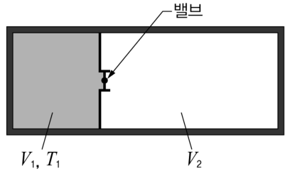

자유 팽창하는 기체의 온도 변화 — 이상 기체·반데르발스 기체·기체 X(비리얼 2차)Temperature change in free (Joule) expansion · ideal gas, van der Waals gas and a second-virial gas X
다음은 자유팽창을 하는 기체의 온도 변화를 기술한 것이다. 【20점】
그림은 내부 및 외부와 열적으로 고립된 단단한 용기에 단원자 분자로 이루어진 기체가 얇은 칸막이에 의해 왼쪽에 갇혀 있는 것을 나타낸 모식도이다. 왼쪽 기체의 부피와 온도는 각각 \(V_1\), \(T_1\)이고, 분자의 수는 \(N=nN_0\)(\(n\)은 몰 수, \(N_0\)는 아보가드로 수)이다. 오른쪽은 진공이고 부피는 \(V_2\)이다. 밸브를 열면 기체가 자유팽창을 하게 되는데, 전체 계가 평형 상태에 도달하게 되면 기체의 온도는 \(T_3\)가 된다.

이 자유팽창에서 기체의 내부에너지는 변화가 없으므로 \(dE=TdS-pdV=0\) 식을 만족한다. 엔트로피 변화는 식 (1)과 같이 쓸 수 있다.
\[dS=\frac pT\,dV\qquad(1)\]엔트로피의 변화를 온도와 부피로 나타내면 식 (2)가 된다. 여기에서 \(c_V\)는 정적 몰비열이다.
\[dS=\left(\frac{\partial S}{\partial T}\right)_VdT+\left(\frac{\partial S}{\partial V}\right)_TdV=\frac{nc_V}{T}dT+\left(\frac{\partial p}{\partial T}\right)_VdV\qquad(2)\]식 (1)과 (2)로부터 식 (3)을 얻는다.
\[dT=\frac{1}{nc_V}\left[p-T\left(\frac{\partial p}{\partial T}\right)_V\right]dV\qquad(3)\]기체의 상태 방정식을 알면 \(\left(\dfrac{\partial p}{\partial T}\right)_V\)를 구하여 식 (3)을 적분함으로써 기체의 온도 변화 \(\Delta T=T_3-T_1\)을 계산할 수 있다. 이 기체를 이상 기체, 반데르발스 기체, 기체 X라고 가정했을 때, 각각의 경우에 온도 변화를 구해 보면 아래 표와 같다. 표에서 \(R=N_0k\)는 기체 상수, \(k\)는 볼츠만 상수, \(a\)와 \(b\)는 상수이다. 온도 변화 과정 동안 \(c_V\)는 변하지 않는다고 가정한다.
| 기체 | 상태 방정식 | \(\Delta T\) |
|---|---|---|
| 이상 기체 | \(pV=nRT=NkT\) | \(A\) |
| 반데르발스 기체 | \(\left(p+\dfrac{an^2}{V^2}\right)(V-bn)=nRT=NkT\) | \(B\) |
| 기체 X | \(\dfrac{p}{kT}=\dfrac NV\left[1+\left(-\dfrac{a}{N_0^2kT}+\dfrac{b}{N_0}\right)\dfrac NV\right]\) | \(C\) |
상수 \(a\), \(b\)의 물리적 의미와 기체 분자 사이의 퍼텐셜 에너지 그래프를 이용하여 \(A=0\)이고 \(B=C\lt 0\)의 관계가 성립하는 이유를 설명하고, 반데르발스 기체의 상태 방정식과 기체 X의 상태 방정식이 \(\left(\dfrac{bn}{V}\right)^2\)을 포함하는 항까지 같게 되는 조건을 구하고 그 조건의 의미를 설명하시오.
- 자유 팽창: 진공으로 퍼지므로 기체가 한 일 0, 단열이므로 열 0 → 내부 에너지 변화 0.
- 이상 기체의 내부 에너지는 온도만의 함수 → 자유 팽창해도 온도가 그대로.
- 실제 분자는 가까우면 밀어내고(크기가 있음) 조금 떨어지면 서로 당긴다(인력).
상수 \(a\), \(b\)의 물리적 의미를 기체 분자 사이의 퍼텐셜 에너지 그래프와 관련지어 설명하시오.
- 레너드–존스 퍼텐셜: 가까운 거리의 강한 척력, 그보다 먼 거리의 약한 인력(우물).
- b: 1몰의 분자들이 서로 들어갈 수 없는 부피, a: 인력 때문에 벽에 미치는 압력이 줄어드는 정도.
이상 기체에서 \(A=0\)인 까닭을 식 (3)과 퍼텐셜 에너지의 관점에서 설명하시오.
- \(T(\partial p/\partial T)_V\)를 계산.
- 분자 간 상호작용이 없으면 내부 에너지는?
반데르발스 기체와 기체 X에서 \(B=C\lt 0\)이 성립함을 계산으로 보이고, 그 까닭을 \(a\), \(b\)와 퍼텐셜 그래프로 설명하시오.
- 두 상태 방정식을 p = … 꼴로 풀어 \(p-T\partial_Tp\)를 계산.
- 기체 X: \(N/N_0=n\), \(N_0k=R\).
반데르발스 기체의 상태 방정식과 기체 X의 상태 방정식이 \(\left(\dfrac{bn}{V}\right)^2\)을 포함하는 항까지 같게 되는 조건을 구하고 그 조건의 의미를 설명하시오.
- 반데르발스 식을 \(\dfrac{p}{kT}=\dfrac NV[\cdots]\) 꼴로 쓰고 \(\dfrac{1}{1-bn/V}\)을 전개.
- 기체 X는 n/V의 1차 항까지만 있다.
아르곤(\(a=0.136\ \rm Pa\,m^6/mol^2\), \(b=3.2\times10^{-5}\ \rm m^3/mol\)) 1 mol이 \(V_1=1\) L에서 \(V_2=1\) L의 진공으로 자유 팽창할 때 \(\Delta T\)를 구하시오. (\(c_V=\tfrac32R\))
- \(\Delta T=-\dfrac{a}{c_V}\dfrac{V_2}{V_1(V_1+V_2)}\).
기체 X의 상태 방정식이 이상 기체와 1차 항까지 같아지는 온도(보일 온도)를 구하시오.
- \(b-\dfrac{a}{RT}=0\).